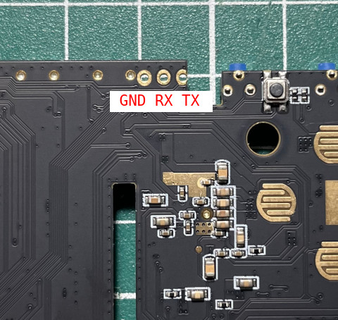
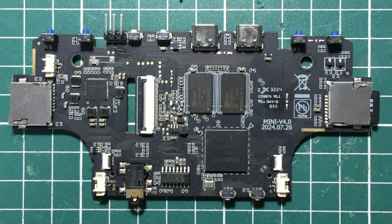
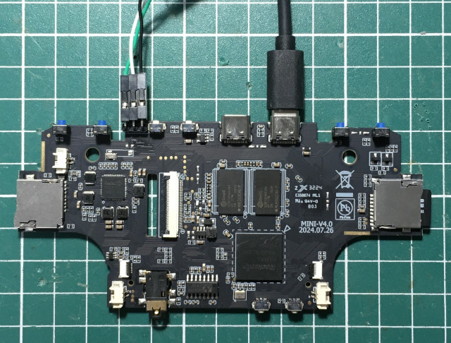

腳位



switch to partitions #0, OK mmc1 is current device reading boot.ini 266 bytes read in 3 ms (85.9 KiB/s) ## Executing script at 00800800 Retrieving file: /extlinux/rk3562-magicx-linux.dtb.conf reading /extlinux/rk3562-magicx-linux.dtb.conf 261 bytes read in 4 ms (63.5 KiB/s) 1: MAGICX Retrieving file: /KERNEL reading /KERNEL 15945736 bytes read in 672 ms (22.6 MiB/s) append: boot=UUID=0508-2833 disk=UUID=2f28af01-d1b8-462d-80cd-1e51cc6cd397 quiet console=ttyFIQ0 console=tty0 net.iframes=0 fbcon=rotate:1 ssh consoleblank=0 systemd.show_status=0 loglevel=0 panic=20 Retrieving file: /rk3562-magicx-linux.dtb reading /rk3562-magicx-linux.dtb 94579 bytes read in 8 ms (11.3 MiB/s) ## Flattened Device Tree blob at 01f00000 Booting using the fdt blob at 0x1f00000 'reserved-memory' region@110000: addr=110000 size=f0000 Loading Device Tree to 0000000031c95000, end 0000000031caf172 ... OK reserve drm-loader-logo offset = 62220 reserve drm-logo mem = 000000003de00000, size = 3325952 Adding bank: 0x00200000 - 0x40000000 (size: 0x3fe00000) Total: 3102.998 ms Starting kernel ...